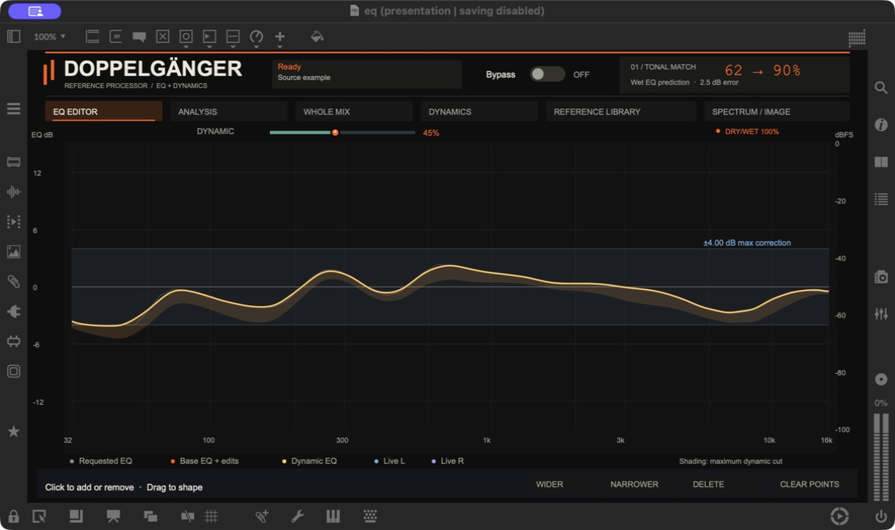
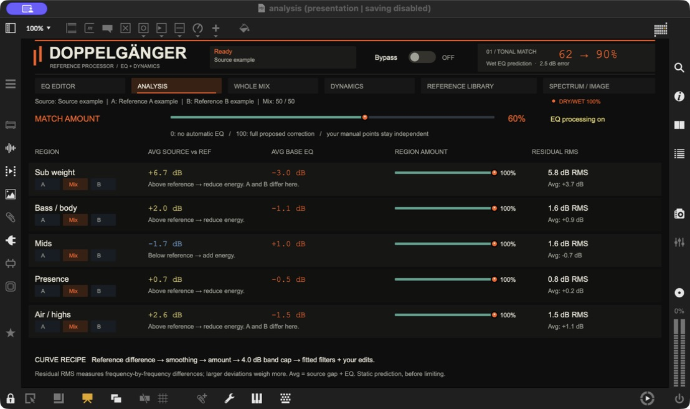
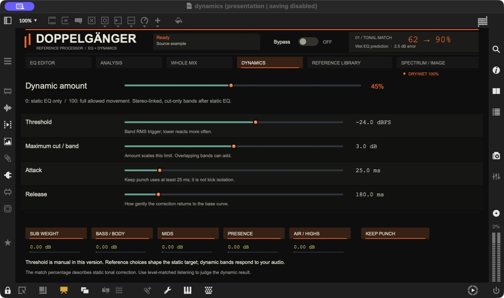

doppelgänger
Controls guide.
What each knob changes, what the numbers tell you, and how to read the graphs.
New in v0.3.0: listen to your session
You no longer need to load a source file. Leave the source selector on Live, place doppelgänger on a track, group or master, load at least one reference, and play a representative passage. Choose Precision or Filters to hear correction; Advice stays dry.
| Source | What it analyzes |
|---|---|
| Live input | The stereo audio arriving at this device, before its processing. Effects earlier in the chain are included. Track/group faders and later effects are not. |
| Master feed | A 20-second capture from the separate doppelgänger Master Feed.amxd companion. Put exactly one companion last in the master device chain. It passes audio unchanged and sends only analysis messages. The tap is still before the master fader, not a hardware-output loopback. |
| File | The previous file-analysis workflow. Choose File, then click the source button or drop audio. Existing saved file-based sessions retain File mode. |
Learn → Hold
Click Learn while the passage plays. Capture stops automatically after 20 seconds, or click Hold after at least 3 seconds. A short analysis follows; the resulting profile and EQ stay fixed until you learn again. Cancel keeps the previous profile. Silence and a missing or duplicate Master Feed produce an explanation rather than replacing your profile.
This instance passes dry while learning, so it does not learn its own correction as the new baseline. The captured audio stays in a temporary in-memory buffer; the learned profile saves with the Live Set. There is no continuous Follow mode in this release.
Guide one track from the whole mix
- Put Master Feed last on the master, and doppelgänger on the track or group you want to change.
- Select Master in doppelgänger, and choose the reference files.
- Open Analysis and raise only the relevant Region Amount controls. Switching to Master sets all five to 0%, clears custom points and disables dynamic correction to give you a neutral starting point.
- Play the passage and Learn. Start with a small Correction and compare by ear.
- Verify the actual master output. Whole mix → Measured in the track instance measures that track, not the remote master.
Master guidance is not instrument separation. A master spectrum cannot tell which track caused an excess. The proposed curve is guidance for the selected track, not a prediction that the master will reach that match percentage. Automatic level compensation is disabled in Master mode; Output and Drive remain manual. Keep one correcting instance active at a time while learning and evaluating changes.
Source controls are also available in the editor’s new first tab. Existing EQ, Analysis, Dynamics and library controls keep their functions. Live learning uses 64 analysis windows distributed across the captured passage.
Start with a reference
doppelgänger compares the tonal balance of your learned audio or source file with one or two reference files. It proposes EQ, lets you edit that EQ, and can control temporary excesses with dynamic EQ. It does not automatically make the whole mix identical to a reference.
- Load at least one reference, then Learn the live input. Alternatively, select File and load a source file. New instances start empty.
- Choose Precision for detailed matching, or Advice to inspect suggestions while hearing dry audio.
- Try Correction: 3 dB, Match Amount: 50%, Drive: 0 dB, and Dynamic amount: 0% as a conservative starting point.
- Set Dry/Wet by ear. Compare with Bypass at a similar listening level.
- Use Whole mix → Measured to check an actual passage after processing.
Those starting values are suggestions, not targets for every track. If nothing changes audibly, check that your source and a reference are loaded, Mode is not Advice, Bypass is off, and Dry/Wet is above 0%.
The compact controls
| Control / value | What it means |
|---|---|
| Source / Ref A / Ref B | Click or drop an audio file. Source is the track you want to improve; A and B are your references. Analysis starts automatically. Loading Source analyzes a file—it does not replace the clip playing in Live. Keep that source representative of what reaches the device. |
| A / B blend · 0–100% | 0% uses A; 100% uses B; 50% blends their tonal profiles equally. This does not mix or play reference audio. A regional A/B choice can override the blend for that region. With only one reference loaded, that reference supplies the target. |
| Correction · 0–9 dB | The maximum requested automatic EQ correction, and the gain cap for each automatic filter. A value of 3 permits automatic cuts and boosts up to 3 dB per filter. It is not a compressor threshold or limiter ceiling. Overlapping filters and manual points can make the combined curve exceed the band. Resolution is 0.01 dB; hold Shift while dragging for finer adjustment. |
| Output · −18 to +6 dB | Level trim on the processed path, after EQ/dynamics and before its limiter. Positive is louder; negative is quieter. An estimated EQ gain compensation is also applied, so Output 0 dB does not mean no internal compensation. Advice remains dry. |
| Drive · 0–9 dB | Extra gain into the processed-path limiter in Precision mode. More drive can make the output denser and reduce peak contrast. It is inactive in Filters and Advice. It does not set a target LUFS value. |
| Dry/Wet · 0–100% | An audio blend: 0% is the original signal, 100% is the processed path, and 50% blends them equally. The signals are latency-aligned. It does not reduce the designed EQ gains; the curve and header score still describe the wet EQ prediction. |
| Bypass | Passes the original, latency-aligned audio while retaining your settings. The compact and editor switches control the same state. Turning it off restores your previous Dry/Wet blend. The displayed EQ remains available to inspect; bypass does not unload the DSP. |
| Show EQ / Hide EQ | Expands or folds the compact graph. It changes the layout only. |
| EQ editor | Opens the full editor, analysis, dynamics, reference library and combined Spectrum / Image view. |
Mode and Style
| Control / value | What it means |
|---|---|
| Advice | Hear the original audio while previewing the proposed EQ and your edits. Output, Drive, EQ and dynamics do not process the audible signal. |
| Filters | Applies a broader, more smoothed reference-inspired EQ. Style is available here. Includes dynamic EQ when enabled and the processed-path limiter. |
| Precision | Fits the reference more closely with a more detailed EQ. Enables Drive. “Precision” does not mean automatic mastering or a guaranteed perfect match. |
| Style: Faithful | No additional tonal tint beyond the reference match. |
| Style: Warm | Tilts the proposed correction toward more low end and less high end. |
| Style: Air | Tilts the proposed correction toward more high end and less low end. |
| Style: Club | Adds a low-end emphasis and a low-mid dip to the proposed correction. |
| Style is greyed out | Expected in Advice and Precision. Style only affects Filters mode. |
Read and edit the EQ graph

- Match score
A static wet-EQ prediction, not a mastering grade. - Correction band
The ±4 dB requested automatic cap. - Base and dynamic curves
The current response and the allowed dynamic reduction range.
| Control / value | What it means |
|---|---|
| Frequency · Hz / kHz | Left is bass; right is treble. 1 kHz means 1,000 Hz. The horizontal axis is logarithmic and spans 32 Hz–16 kHz. |
| EQ gain · dB | Above 0 boosts; below 0 cuts. This is filter gain, not the track’s absolute loudness. |
| Grey curve · Requested EQ | The requested automatic correction before fitting it to the actual overlapping filters. |
| Orange curve · Base EQ + edits | The calculated response of automatic EQ plus your custom points. Differences from the grey curve come from the filter fit and your edits. |
| Yellow curve · Dynamic EQ | The base curve plus current dynamic gain reduction. It appears when Dynamic amount is above 0. Its movement depends on the playing audio. |
| Blue horizontal band · ± Correction | Shows the automatic correction setting around 0 dB. It is a guide to the requested cap, not a guaranteed ceiling on the combined response. |
| Warm shading below the base curve | The allowed dynamic cut range. Its depth follows Dynamic amount, Maximum cut / band and which dynamic bands are enabled. |
| Blue / purple spectra · Live L / R | The actual output spectrum for left and right channels. Read amplitude against the editor’s right-hand dBFS axis, not its left-hand EQ gain axis. |
| Custom dots | Click the base curve once to add a neutral point. Drag left/right to choose frequency and up/down to change gain. Up to eight custom points are available, each with ±12 dB gain. |
| Wider / Narrower · Q | Controls the selected point’s bandwidth. Lower Q is wider and gentler; higher Q is narrower and more focused. The supported Q range is 0.2–12. |
| Delete / Clear points | Click a dot without dragging to remove it, or use Delete for the selected point. Clear points removes all manual points. Removing a point removes only its contribution; automatic matching and other points remain. |
Custom points are independent of Match Amount and Correction. Setting automatic matching to zero does not remove them. The EQ curves exclude output trim, limiter action and the final Dry/Wet blend.
What “62% → 90%” actually means
The first number is the analyzed source’s tonal match. The second predicts its tonal match after the wet static EQ, including manual points. For example, 62% → 90% means more analyzed frequency bands are predicted to fall within the matching tolerance.
The tolerance is ±3 dB from the selected reference target, after removing an overall level offset. The score counts valid bands on the 61-band, logarithmic analysis grid. A 100% score means those bands fall within the tolerance—not that the tracks sound identical.
The adjacent dB error is RMS spectral error: a summary of the remaining tonal differences. Lower means closer tonal balance. Neither number measures groove, arrangement, stereo quality, perceived punch, or overall mastering quality. The header does not include dynamic movement, Drive/limiting or partial Dry/Wet. Use Measured for an actual output comparison.
Analysis: choose how much to match

- Match Amount
How strongly automatic EQ follows the proposal. - Regional reference
Use A, B, or the global blend for each region. - Regional amount
Scale matching in this part of the spectrum. - Residual RMS
Remaining frequency-by-frequency error; lower is closer.
| Control / value | What it means |
|---|---|
| Match Amount · 0–100% | Scales the proposed automatic EQ: 0% applies none; 100% applies the full proposal, subject to Correction and the regional settings. It is not a desired match score. Unlike Dry/Wet, it changes the EQ design itself. Manual points stay independent. |
| A / Mix / B in each region | Choose A or B as that region’s reference, or Mix to follow the main A/B blend. Targets transition smoothly between regions. |
| Region amount · 0–100% | Scales automatic matching in that region. A setting of 0 stops that region requesting correction; adjacent overlapping filters can still affect it. |
| Avg source vs ref · dB | Average difference between the normalized source and reference in that region. Positive means the source has more relative energy; negative means less. |
| Avg base EQ / Actual EQ · dB | Average combined static EQ response in the region, including custom points. Negative is an average cut; positive is an average boost. In Advice, this is only a preview. |
| Residual RMS / Remaining error · dB RMS | The size of the predicted residual tonal differences across that region. It is not simply Source vs ref minus Actual EQ: it includes differences at individual frequencies, then combines their squared magnitudes. |
| Avg · dB | The signed average residual. It can look small even when Remaining error is large, because positive and negative differences cancel in the average. |
| References differ here | A and B have substantially different tonal shapes in that region. Choosing one reference may be more useful than blending them. |
| Control / value | What it means |
|---|---|
| Sub weight | 32–80 Hz |
| Bass / body | 80–250 Hz |
| Mids | 250 Hz–2 kHz |
| Presence | 2–6 kHz |
| Air / highs | 6–16 kHz |
These are frequency regions, not isolated instruments. Kick, bass, percussion and other sounds can overlap. A large remaining error can reflect the correction cap, reduced matching amount, filter smoothing, manual edits, or different musical content. The regional error also keeps the original normalization fixed, whereas the header score removes a new overall offset.
Dynamics: react only when needed

- Amount
Scales the maximum dynamic movement. - Threshold
Controls when each band starts reacting. - Attack and release
Control how quickly reduction engages and recovers. - Keep punch
Enforces at least 25 ms attack.
Five stereo-linked, cut-only dynamic bands respond to the audio after static EQ. They reduce temporary excesses rather than holding a fixed cut all the time. Their threshold is manual; it is not learned from the references.
| Control / value | What it means |
|---|---|
| Dynamic amount · 0–100% | Scales the permitted dynamic reduction. 0% disables dynamic action; 100% allows the full configured range. The Dynamic controls in the EQ editor and Whole mix adjust this same setting. |
| Maximum cut / band · 0–6 dB | Maximum reduction for each dynamic band before the amount scale. For example, 4 dB with 50% amount allows up to 2 dB per enabled band. Overlapping bands can add together. |
| Threshold · −60 to 0 dBFS | The band RMS level at which reduction begins to engage, with a soft transition. Lower values generally trigger more reduction; higher values trigger less. This is a band-level detector, not a peak threshold for the whole track. |
| Attack · 1–150 ms | How quickly reduction engages. Faster attack catches more of the onset; slower attack lets more of the initial transient pass. |
| Release · 30–1,000 ms | How quickly the reduction lets go as the signal falls. Shorter release recovers faster; longer release holds the cut longer. |
| Keep punch | Enforces an effective attack of at least 25 ms, even if the Attack control shows a lower setting. It can preserve more of an onset, but does not identify kicks or guarantee punch. |
| Region buttons | Enable or disable the five dynamic bands. Their centers are approximately 55, 150, 700, 3,500 and 10,000 Hz. |
| Band meters · dB | The current gain reduction for each band. 0 dB means no cut at that moment; −2 dB means a 2 dB cut. No movement may mean the audio is below threshold, the band is disabled, amount is zero, or the audio engine is stopped. |
Whole mix: files versus actual output
Files compares stored source/reference measurements. Turning a processing knob does not change the original file measurements. Some values require a separate full-file scan and may be unavailable.
Measured → Measure 30 seconds captures the same playing passage before and after the device, aligned for latency. Its output includes the final Dry/Wet blend, bypass state, dynamics and limiting. Keep the audio playing and controls unchanged during capture. If settings change, repeat the measurement. Cancel stops it. These captured results are temporary and are not saved with the Live Set.
| Control / value | What it means |
|---|---|
| Integrated loudness · LUFS | Average perceived loudness over the measured file or captured passage. Less-negative numbers are louder. This is a measurement, not a loudness target the plugin automatically reaches. |
| Loudness range · LU | How much loudness varies over the analyzed material. Arrangement strongly affects it. It is not the difference between sample peak and average level. |
| RMS · dBFS | Average signal level, without perceptual loudness weighting. Higher / less negative generally means more average energy. |
| Transient headroom / crest · dB | Peak level minus RMS level. A larger gap suggests more peak-to-average contrast, but is not a complete measure of punch or an isolated kick measurement. |
| Stereo side / mid · dB | Side energy relative to the center. Higher values mean more side energy. This is a width clue, not a quality score or a stereo-width control. |
| L / R correlation · −1 to +1 | Near +1: similar channels; around 0: less correlated; negative: opposing content that may cancel when summed to mono. There is no single ideal number for every mix. |
| Channel balance R / L · dB | Positive means more right-channel energy; negative means more left-channel energy; 0 means equal energy. |
| True peak · dBTP | Estimated peaks between digital samples. This can exceed the sample peak. The plugin measures it when available; its limiter is a sample-peak limiter, not a true-peak limiter. |
| Full scan required / Re-analyze file | That measurement is unavailable. It does not mean zero. Fresh reference imports do not automatically supply every full-file loudness metric. |
| Output / Drive / Dynamic / Attack sliders | Convenient access to the same controls described above—not additional processing stages. Attack still respects Keep punch’s 25 ms minimum. |
File spectra and stereo/punch statistics use sampled analysis windows distributed across the file. The selected 30-second output measurement covers a different duration from a full reference track, so arrangement differences matter. FFmpeg is needed for LUFS and true-peak measurements; missing values are shown as unavailable.
Reference library: save, browse, reuse
Import audio stores the original path plus analysis. It does not copy your audio. Loading and analyzing a reference through the compact A/B buttons also saves it to the library. Importing in the library does not change the active references until you choose Use A or Use B. Identical files are recognized by their contents; reimporting a moved file updates its path.
| Control / value | What it means |
|---|---|
| Use A / Use B | Loads that entry’s saved tonal profile into the selected reference slot without playing reference audio. |
| Low / Mid / High energy | Approximate shares of analyzed spectral energy: low = 32–250 Hz, mid = 250 Hz–2 kHz, high = 2–16 kHz. The three percentages add to 100%. They are frequency-weighted tonal descriptors, not instrument isolation, perceptual loudness shares or quality scores. |
| Bass-heavy / Bright / Warm / Mid-forward / Balanced | Browsing tags derived from those energy shares. Bass-heavy: at least 55% low; Bright: at least 24% high; Warm: at least 38% low and under 12% high; Mid-forward: at least 60% mid; Balanced: none of those rules applies. Several tags can apply. |
| Sort / filters | Sort by name, bass share or high-frequency share, and filter by tonal tag. These affect browsing only. |
| Missing or moved original | The stored analysis still works for matching. Reimport the original at its new location to update the path. |
| Where it is saved | Windows: %APPDATA%/Doppelganger/References. macOS: ~/Library/Application Support/Doppelganger/References. This library belongs to the local computer; the download does not contain anyone’s personal collection. |
Spectrum / Image: the last tab
The top graph overlays the average tonal spectra of Source, Ref A, Ref B and the static EQ preview. The fingerprint strips below use the same frequency positions; brighter cells mean more relative energy. Both show analyzed averages, not the live output. The image is not a timeline or a stereo field display. For live output, use the L/R spectra in the EQ editor.
Useful distinctions and limits
| Control / value | What it means |
|---|---|
| Correction vs Match Amount vs Dry/Wet | Correction sets the automatic gain cap. Match Amount scales the automatic EQ proposal. Dry/Wet blends the resulting processed audio with the original. They do different jobs. |
| Signal path | Static EQ → dynamic EQ → estimated compensation + Output + Precision Drive → sample-peak limiter → Dry/Wet blend. Advice and Bypass pass dry audio. |
| Limiter ceiling | The wet-path limiter is set to −1 dB sample peak. It does not guarantee a true-peak ceiling. At partial Dry/Wet, original audio is mixed after that limiter and can exceed its ceiling. |
| Matching vs mastering | This build does not automatically match stereo width, groove, arrangement or target LUFS. A better tonal score is one piece of feedback; decide with level-matched listening. |
| Save and reload | Profiles, custom points, regional choices and dynamic settings save in the Live Set. The reference library is saved separately on your computer. Captured Measured results are temporary. |
| Compatibility | One ZIP for macOS and Windows. Tested in macOS Live 12 / Max 9; Windows path/discovery logic has automated checks, but a full Windows/Ableton check remains pending. Live 11 is not verified. |